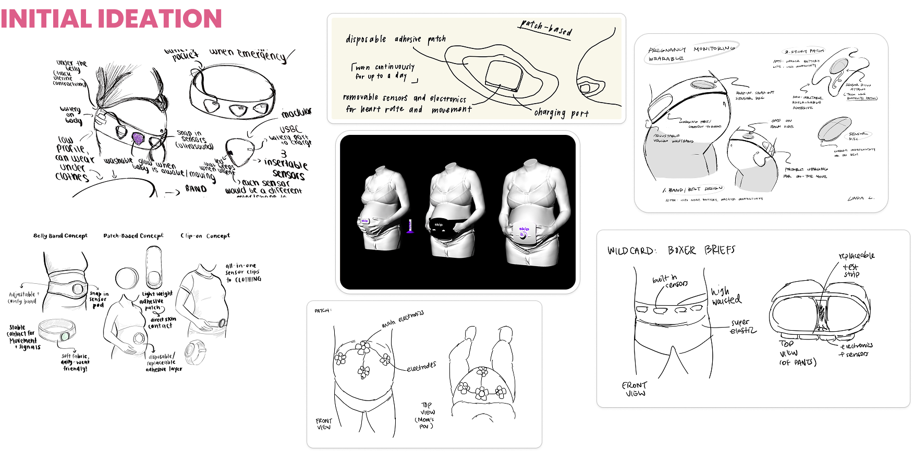
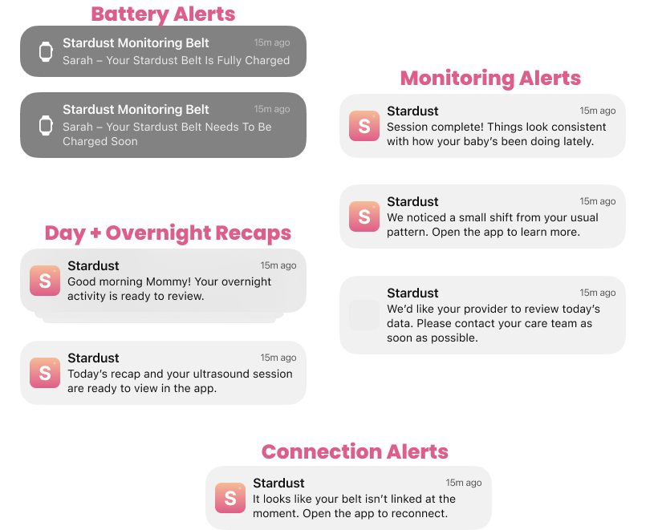

Skip: Project Stardust
View PresentationTechnical Advisor for Wearable Maternal Health Monitoring
Skills: Onshape, Rapid Prototyping, Soft Goods Prototyping, User Research, Figma

Project Overview
Project Stardust was developed in collaboration with Skip as an at-home wearable concept for maternal
health monitoring.
I served as a technical advisor to a cross-functional team of engineers and designers, helping translate
user needs into
the mechanical architecture of the belt, sensor-array packaging, physical prototyping strategy, and
companion-app experience.
The goal was to create a wearable that could support continuous monitoring while feeling comfortable,
approachable, and
practical enough to fit naturally into daily life.
User Research & Product Direction
The team combined literature review and competitive analysis with 84 survey responses and 31 discovery
interviews across
first-time, second-time, high-risk, rural/remote, and underserved mothers.
Research showed that anxiety was highest between appointments, while raw data without context could
increase stress.
Users trusted their providers most and wanted continuous information to support, not replace, clinical
care. Bulky belts
and handheld ultrasound products also felt impractical or intimidating, pushing the concept toward a
softer, lower-profile
wearable paired with clear, interpretable feedback.


Initial Ideation
Early concepts explored several ways to integrate sensing into everyday wear, including belly bands,
adhesive patches,
clip-on modules, and garment-integrated concepts. We compared how each approach would affect sensor
contact, repeatable
placement, comfort, charging, and the amount of hardware a user would need to manage.
We ultimately converged on a monitoring belt architecture with modular sensor pods. The belt gave us a
more stable base
for positioning sensors around the abdomen while still leaving room to iterate on soft goods, pod
placement, and cable routing.

Belt Architecture & Sensor Array
The belt architecture used three compact sensor arrays distributed across the abdomen.
The arrays were
connected through USB-C cabling routed through the belt to a shared battery pack held in an elastic
pocket. Keeping the
battery separate from the sensing pods helped reduce the size and mass of the modules against the body
while keeping the
power system accessible for charging.
Each sensor-array housing was built around a stacked package containing 1 IMU, 1 ultrasound
sensor, 2 EHG electrodes,
and 2 microphones, along with the FPGA and speaker assembly shown in the concept stackup. I
modeled the housing and
overall wearable architecture in Onshape, balancing sensor placement and skin contact against pod
thickness, cable routing,
serviceability, and comfort.
Prototype Fabrication
To create the physical mockup, we used a 3D-printed housing and dimensionally representative sensor
arrays to evaluate the
scale and form factor of the hardware on-body.
To improve wearable conformability and make the prototype easier to evaluate, the sensor pods and
battery were sewn into
the band. We experimented with elastic properties, band materials, material thickness, pocket
construction, and component placement to understand how the belt could hold the electronics
securely without feeling overly rigid or bulky.
Companion App
I also contributed to the UX and functional design of the companion application. The app was structured around wearable onboarding, daily snapshots, trends, ultrasound visualization, battery and connectivity status, and tiered monitoring alerts. Rather than exposing sensor streams on their own, the experience was designed to translate measurements into understandable context and make relevant information easier to share with a care team.


